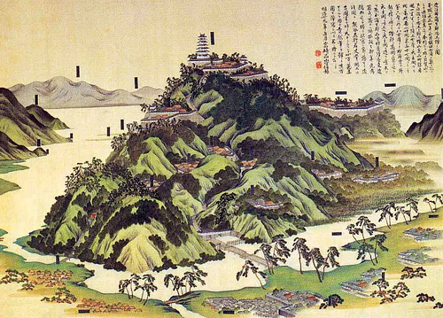
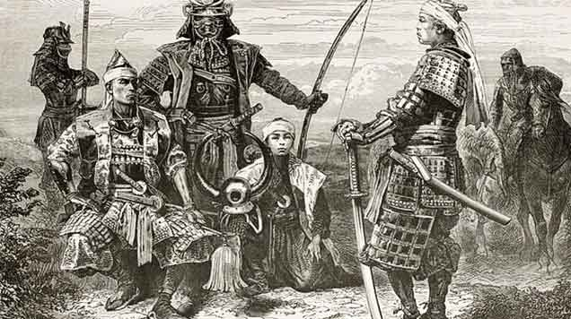

En el Japón medieval (1185-1603), el término feudalismo describe la relación entre señores y vasallos en la que la propiedad y uso de la tierra se daba a cambio del servicio militar y la lealtad. Aunque en cierto grado ya estaba presente anteriormente, el sistema feudal se estableció realmente en Japón a partir del comienzo del Período Kamakura, a finales del siglo XII, cuando los shogunes o dictadores militares reemplazaron al emperador y la corte imperial como principal estamento de gobierno del país. Los shogunatos distribuían la tierra a los seguidores leales y esas tierras (shoen) eran supervisadas por funcionarios como los jito (administradores) y shugo (agentes). A diferencia del feudalismo europeo, eran cargos hereditarios, al menos al principio, que no poseían tierras. Sin embargo, con el tiempo los jito y los shugo, que ejercían sus funciones lejos del gobierno central, fueron ganando poder y muchos de ellos se convirtieron en grandes terratenientes (daimios) por propio derecho y, con sus ejércitos privados, desafiaron la autoridad de los gobiernos del shogunato. Así se fragmentó el sistema feudal a nivel nacional, aunque la relación señor-vasallo continuó tras el período medieval, con los samuráis ofreciendo sus servicios a los propietarios de tierras.

El feudalismo (hoken seido), es decir, el acuerdo entre señores y vasallos por el que los primeros concedían un beneficio u on (p. ej. tierras, títulos o cargos de prestigio) a cambio del servicio militar (giri) por parte de los segundos, empezó a generalizarse en Japón desde el comienzo del Período Kamakura (1185-1333). El principal instigador fue Minamoto no Yoritomo (1147-1199), quien en 1192 se nombró a sí mismo dictador militar o shogun de Japón. Sustituyendo el dominio del emperador y de la corte imperial, Yoritomo distribuyó tierras (a menudo confiscadas a rivales derrotados) entre sus aliados y seguidores fieles, a cambio de su servicio militar y ayuda continua. Yoritomo actuó especialmente persuadiendo a miembros del clan rival Taira para que pasaran al suyo, el Minamoto, ofreciéndoles tierras y posiciones de privilegio si aceptaban ser sus vasallos en el nuevo orden.

A diferencia de Europa, el sistema feudal japonés estaba menos basado en contratos y era más bien un asunto personal entre señores y vasallos, con una fuerte influencia paternalista por parte de los primeros, a los que se hacía referencia como oya o ‘padre’. Este sentimiento ‘familiar’ venía reforzado por el hecho de que muchas relaciones señor-vasallo eran heredadas. El sistema permitía al shogun controlar directamente la mayor parte de su territorio, pero la falta de instituciones formales de gobierno sería un debilidad permanente de los shogunatos, porque las lealtades personales raramente pasaban de generación a generación.